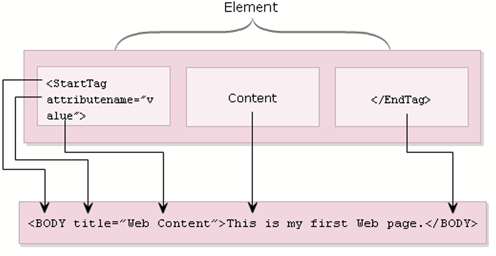
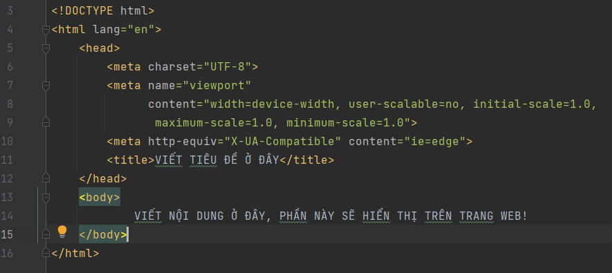

Cùng tìm hiểu về một số kiến thức cơ bản của ngôn ngữ lập trình HTML
1. Cấu trúc một thẻ trong HTML
Trong ảnh trên ta có thể thấy được cấu trúc của một thẻ trong HTML. Đa số các thẻ đều bao gồm một thẻ mở đầu,
và một thẻ đóng, ở giữa chúng là nội dung, và các thuộc tính sẽ được thêm vào trong thẻ mở đầu.
Tuy nhiên không phải tất cả các thẻ đều cần thẻ đóng để kết thúc, các thẻ đó ta gọi là thẻ tự đóng. Ví dụ như
thẻ <br>, <img>, <input>,....Đặc biết với thẻ <script> thì ta có thể thêm thẻ đóng hoặc không thêm thì chương trình
vẫn sẽ hoạt động bình thường.
2. Cấu trúc một file HTML
Từ ảnh trên ta có thể thấy được cấu trúc của một file HTML đơn giản bao gồm:
Một tag <!DOCTYPE html> ở dòng đầu tiên.
Điều này sẽ giúp cho máy tính hiểu và đọc được file HTML của chúng ta. Lưu ý rằng trong trường hợp <!DOCTYPE html> được
viết thường thì máy tính vẫn có thể hiểu được.
Tiếp theo thẻ <html> sẽ cho trình duyệt biết rằng nó đang đọc mã HTML.
Sau đó là thẻ <head>, thẻ này là nơi chứa <title>-tiêu đề của trang web, thẻ <meta>, các thẻ dùng để liên kết tới các file bên ngoài
như <link>, <script>, ....
Tiếp đến là thẻ <body>, thẻ này chứa toàn bộ nội dung sẽ hiện thị trên trang web cũng như các thao tác bổ trợ cho việc hiển thị trên trang web
3. Ưu điểm của HTML
- Có khá nhiều tài nguyên giúp hỗ trợ và được sử dụng rộng rãi
- Dễ hiểu, đơn giản, học nhanh chóng
- Hoàn toàn miễn phí với các mã nguồn mở
- Các markup được sử dụng trong HTML thường ngắn gọn có tính đồng bộ cao
- Dễ dàng tích hợp được các ngôn ngữ như PHP, Python...
4. Nhược điểm của HTML
- Dùng chủ yếu cho các web tĩnh, trong trường hợp nếu dùng tính năng động cần phải dùng JavaScript hoặc ngôn ngữ backend bên thứ 3 như PHP.
- Một vài trình duyệt còn chậm để có thể hỗ trợ tính năng mới của HTML
- Khó kiểm soát được cách cách đọc và hiển thị file HTML của trình duyệt
5. HTML5 là gì?
HTML5 là phiên bản cập nhật của HTML từ HTML4 (XHTML tuân thủ theo một sơ đồ đánh số phiên bản khác).
HTML5 sử dụng các quy tắc cơ bản như HTML4, nhưng được bổ sung thêm một số thẻ và thuộc tính mới hỗ
trợ ngôn ngữ đặc tả tốt hơn và cũng hỗ trợ một số yếu tố động sử dụng JavaScript. Một số thành phần mới như:
<article>, <audio>, <nav>, <embed>, <figure>, <figcaption>, <video>,...
Để xem chi tiết về những cập nhật mới này bạn có thể ghé thăm trang web của W3C.
6. Tổng kết
Tóm lại, HTML hay hiện giờ là HTML5 là một ngôn ngữ đánh dấu được sử dụng để tạo nên các trang web tĩnh. Mặc dù vẫn còn một số nhược điểm nhưng nhìn chung đây vẫn là một ngôn ngữ lập trình thiết kế website tốt và thông dụng nhất hiện nay. Có một số thay đổi ở phiên bản HTML5, các bạn có thể xem thêm ở trang web của W3C. Ngoài ra, các bạn cũng có thể tự học HTML, một số trang web tốt để học là codecademy, F8 Fullstack